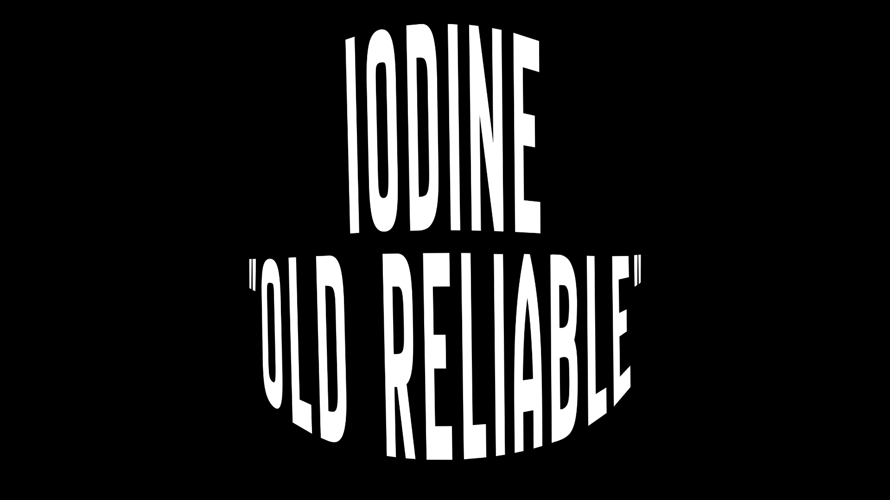

Games
Over 2,800 games in the new Game Library, plus Old Reliable from Iodine I.
Game Librarysearch, play here, favorites
Game Library new
The same games as Old Reliable, but with search that works, real names, favorites and recently played, and games open right here instead of in a new tab.

Old Reliable
The library that came with Iodine I, with a fresh new look. Games open in a new tab. Tried and true!

More libraries
3kh0, Sebastian, gn-math, Retro Consoles and three more. They're all in Iodine 3.